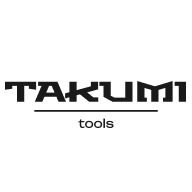

Материал компании

MITEX 2026 · Россия · Стенд 7А15
ТАКУМИ ТУЛС , ООО
Карточка проверена 10 ноября 2026, 09:25 · Источник ↗ · Снимок оригинальной карточки ↗
О компании
-
Контакты
Все рубрики участника
Зал
- Зал № 7
Участник выставки
- MITEX
Фотографии и изображения


Видео, каталоги и документы
Каталог продукции участника
Материалы каталога
Каталог продукции 2026г
Каталог продукции 2026г
Каталог продукции 2026г Вложения Takumi_vol.1.pdf 14.10.2026 13 18.39 MB